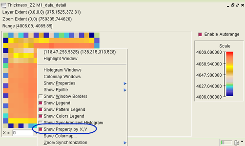
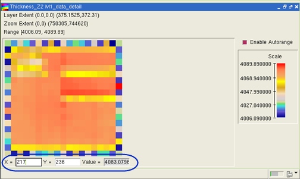

You can show the value for a DFM property
at a specific location in a generated Calibre CMPAnalyzer colormap.
Prerequisites
You have
followed the steps described in “CMP Analysis” to run
Calibre CMPAnalyzer in the interactive GUI or batch mode of Calibre
Interactive.
You have opened
Calibre RVE for DFM and set the results viewing and highlighting options
as described in “Reviewing Analysis Results”.
Procedure
- Review
the results data displayed in the CMP tab.
- Right‑click
in the M1 row and choose .
- Right‑click
in the generated colormap and choose in the popup menu.
Figure 1. Show
Property by X, Y
- Enter the
x‑ and y‑coordinates in the fields shown at the bottom of the colormap
to display the DFM property value at that location. Coordinates
are specified in microns as positive integers.
Figure 2. Property
Value at Specified X, Y